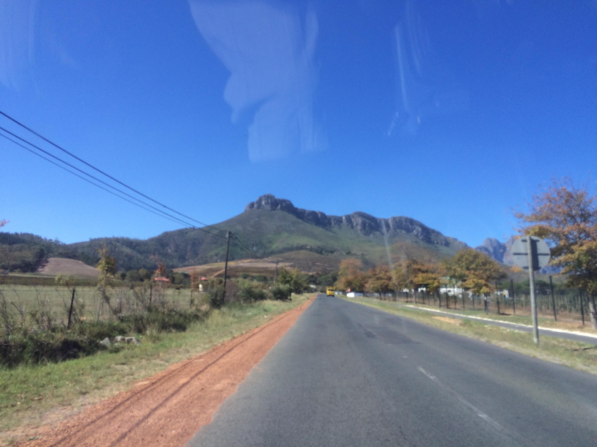

Tag 4 – "Schöne Plätze und Party!!!"
By Evita Bley
Ich glaube es wird normal, dass ich so gegen 8:30 Uhr aufwache. Heute war es zwar um 9:00 Uhr, aber alle anderen haben noch geschlafen … okay ich bin auch als erstes ins Bett gegangen. Aber wie auch immer, nach ausgiebigem Aufwachen haben wir entschieden, dass wir ein paar Einkäufe in der Mall machen wollen und müssen. Also sind wir aufgebrochen und jetzt haben Martin und ich auch endlich eigene südafrikanische SIM-Karten. Hach ist das günstig hier. Deutschland ist wirklich hinterher, was so etwas betrifft. Wir werden also sicher sein, wenn wir uns auf die „wilden“ Straßen begeben mit dem Auto.

Danach ging es direkt weiter Richtung Stellenbosch. Aber diesmal sind wir um den großen Berg rumgefahren und ein Stück auf einen anderen Berg rauf. Der Blick auf alles von da war wieder großartig. Man fährt ein bisschen durch den Wald und dann kommt irgendwann ein kleiner Abzweig und man ist inmitten totaler Idylle.
Eine kleine Weinplantage inmitten von riesigen Bergen, ein Teich mit wunderschöner Wiese drumherum, eine kleine Insel in der Mitte, und ein Haus mit Terrasse, wo man prima essen und trinken kann. Nicht ohne Grund heißt dieses Lokal „Postcard Café“, man kann von jedem Winkel aus wunderschöne Postkartenmotive zaubern. Nach einem super Mittagessen (Maccharoni in weißer Sauce mit Hühnchen) noch ein kleiner Spaziergang durch dieses wunderbare Gelände und zurück nach Stellenbosch.
Wie ich oben schon geschrieben habe, werden wir uns ein Auto mieten die nächsten zwei Wochen. Wir haben im Internet vorher gesucht, wo wir dafür hingehen müssen und was es dann kostet. Wir waren also an besagter Vermietungsstelle (nach einigem Suchen) und sie sagten uns, dass wir es online buchen müssen und dann mit einer Art „Gutschein“ da wieder aufkreuzen sollen. So werden wir am Wochenende das Auto online mieten und hoffen, dass sie es uns am Montag aushändigen. Auch das ist hier sehr günstig (10 Euro pro Tag ca.).
Noch einmal kurz in die Mall, um ein paar Geschenke für die Feier heute Abend zu besorgen. Das heißt Jeanine musste noch etwas besorgen. Martin und ich hatten bereits in Deutschland nach etwas nettem Ausschau gehalten und siehe da, Jeanines Mutter und ihre Schwester mögen Weihnachten, was liegt also näher als Nussknacker und Räuchermännchen. Ich habe diese beiden kleinen Sachen in Berlin besorgt. Man mag nicht glauben, dass es da ein riesen Weihnachtshaus gibt, (Käthe Wohlfahrt), was das ganze Jahr über Weihnachtsdinge in Hülle und Fülle verkauft. Kauft mal bei 17 Grad und Frühling Weihnachtsdeko ein, das ist nicht so einfach.
Nun nach einer kurzen Erholung zu Hause sind wir zu viert losgefahren in Richtung Kapstadt. Wie gerade schon angekündigt haben Jeanines Mutter und ihre Schwester Geburtstag. Familie ist für sie wahnsinnig wichtig und es gibt eine Menge Familie :D Auf dem Weg fährt man an allen möglichen Arten von Häusern vorbei. Jeanine hat uns auf der Fahrt einiges darüber erzählt. Es gibt die „ich baue mir aus allem was ich finde etwas“-Hütten.
Dann etwas bessere Hütten, die aber trotzdem einem Standard entsprechen, den ich für unfassbar schlimm halte. Und dann gibt es befestigte kleine Häuschen, die tatsächlich ganz „niedlich“ sind. Allerdings würden wahrscheinlich nach deutschem Standard darin 1-2 Leute übers Wochenende wohnen und sie hätten es in ihrem Garten stehen … All diese Unterkünfte sind für Menschen, die sich in keiner Gegend die Miete leisten könnten. Die befestigten Häuser entstehen durch ein Programm der Regierung, damit zumindest ein gewisser Lebens-Komfort für jeden gegen ist. Das heißt: Strom, fließend Wasser, Internet. Jeder hier hat ein Smartphone, auch die wirklich Armen, das heißt es werden Antennen aufgestellt, die freies W-LAN über die Gebiete verteilen, so dass man mit dem Smartphone freien Zugang zum Internet hat. Gedacht ist es für Bildung, so dass jeder die Chance hat sich weiterzubilden.
Auf dem Weg hat man natürlich (wie sollte es anders sein) einen fantastischen Blick. Und wir hatten Glück, und sind direkt in den Sonnenuntergang gefahren. Boah das sieht hier alles so geil aus mit den Bergen!
In der Gaststätte angekommen werden wir herzlichst begrüßt von Willie (der Mann der uns auch vom Flughafen abgeholte hat), also schon mal jemand, den wir kennen :) Er ist furchtbar nett und ein großartiger Typ. Jeanines Mutter begrüßte uns auch gleich herzlich und freute sich sehr, dass wir da sind. Wir lernten außerdem Jeanines beide Schwestern kennen, ihren Vater und einen Haufen andere nette Menschen und natürlich, wie auf jeder Party, gab es auch eine Person, die es mit dem Alkohol etwas übertrieb und dann etwas „merkwürdig“ wurde. Sie wollte uns nicht glauben, dass wir aus Deutschland sind … Aber wie wohl ich mich gefühlt habe sieht man daran, dass ich eeeecht viel getanzt habe. Sogar die Kellner tanzen hier mit und sind Teil der Feier wie jeder andere (gleich am Anfang stellte sich Sophia als unsere Kellnerin für den Abend vor und später sang und tanzte sie :) ).
Es war alles in allem ein herrlicher Abend, mit jeder Menge Wein, Gesprächen und Musik. Um 00:30 Uhr fallen wir dann totmüde ins Bett. Thx to Jeanine’s family to be such a nice host to us!
Morgen geht es an den Strand und zu einem Bierfestival, ich bin gespannt.